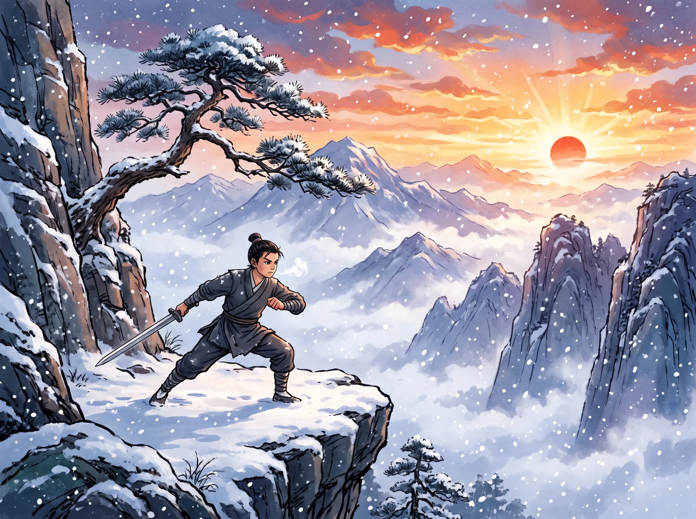
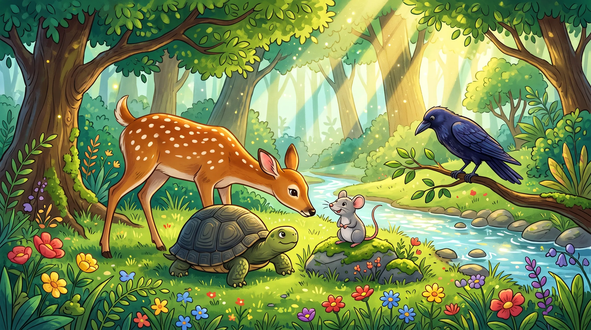
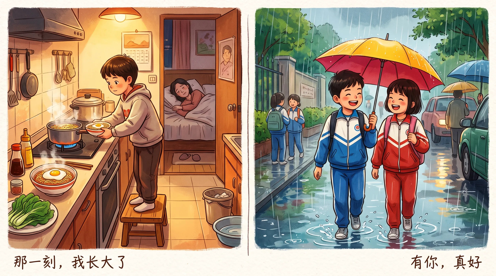

⚡ 题目逐词对照 · 选项精准释义 · 名师深度解析 · 自动配图互动
古时候，有个名叫沉香的孩子，自幼与父亲在山村相依为命。沉香聪明懂事，勤快孝顺，可是每当看到别的孩子依偎在母亲身旁时，他心里总有一种说不出的失落。父亲从不主动提起母亲的事，只告诉他要好好做人、认真读书。沉香虽然懂事，却一直想知道自己的母亲究竟去了哪里。
直到七岁那年，沉香偶然从长辈口中得知了一个惊人的秘密——原来自己的亲生母亲三圣母并没有离世。她因为违反天规、执意留在人间，被二郎神压在险峻高耸的华山之下受苦。沉香听后悲愤交加，立刻跑到母亲受难的石碑前，暗暗立誓：“不管前路多么艰难，我一定要把母亲救出来！”
为了实现心愿，沉香辞别了年迈的父亲，背上简单的行囊，独自踏上寻师学艺的道路。他走过崎岖的山路，渡过湍急的河流，也曾在荒凉的山林里迷失方向。一路上，他遇到不少困难，却从未想过放弃。后来，一位隐居深山的仙人被他的赤诚纯孝所感动，终于答应收他为徒，传授武艺与法术。
学艺的生活十分艰苦。不论是数九寒冬还是盛夏酷暑，沉香总是天未亮便起身练剑习武。刚开始时，他常常因为动作不熟练而跌倒，有时手掌磨破了皮，鲜血直流；有时累得连筷子都拿不稳。师父劝他休息，他却只是擦掉汗水，继续练习。日子一天天过去，他的双掌磨出了厚厚的老茧，身上也添了不少伤痕，但他从不叫苦。
春去秋来，整整八年过去了，沉香终于练就了一身超群的本领。临别之际，师父将一把重逾千斤、闪耀着金色光芒的宣花神斧赠给他，并叮嘱他说：“真正强大的力量，不只是来自兵器，更来自坚定的信念和一颗善良的心。”沉香把师父的话牢牢记在心里，随后踏上前往华山的路。
沉香一路跋涉来到华山脚下。面对手持兵刃、凶神恶煞的天兵天将以及神通广大的二郎神，他毫无惧色。经过数天数夜的激战，沉香凭着顽强的毅力和救母的决心，终于迫使对手退让。他飞身跃上华山绝顶，双手紧握宣花神斧，凝聚全身力气朝大山狠狠劈去。只听“轰隆”一声震天巨响，地动山摇，万丈巨峰竟硬生生裂开了一道深渊。被囚禁多年的三圣母终于重见天日。母子紧紧相拥，热泪盈眶。沉香明白，正是多年来不放弃的坚持与孝心，让他完成了看似不可能的事情。


鹿、乌龟、老鼠和乌鸦住在一片茂密的树林里。它们虽然外形不同、生活习惯也不一样，却一直互相关心，是形影不离的好朋友。平日里，鹿跑得快，常替大家寻找远处的食物；乌鸦飞得高，能够观察四周的动静；老鼠身体小巧，牙齿锋利；乌龟虽然行动缓慢，却十分稳重，遇到事情从不轻易放弃。
一天，鹿在林间奔跑时不慎被猎人设下的绳套紧紧困住。它越挣扎，绳子勒得越紧，只好大声呼救。乌鸦听见叫声后，立刻飞回树林报信。老鼠闻讯急忙赶去相救。乌龟也十分担心朋友，便一步一步朝鹿被困的地方赶去。
乌鸦和老鼠看到乌龟慢慢爬过来，都吃了一惊。老鼠急切地说：“你行动这么慢，怎么也跑到这么危险的地方来？我牙齿锋利，可以咬断绳子；乌鸦会飞，遇到危险可以马上飞走；可你要是被猎人发现，怎么逃得掉呢？”乌龟坚定地回答：“我知道自己跑不快，可朋友有困难，我不能只顾自己的安全。我宁可冒一点危险，也要来看看能不能帮上忙。”
就在这时，猎人手持弓箭大步走来。老鼠赶紧咬断绳套，鹿立刻跃入灌木丛逃跑，乌鸦也振翅飞上大树。猎人赶来时发现绳子被咬断，猎物也不见了，气得直跺脚。正当他懊恼时，低头看见了行动缓慢的乌龟，便把乌龟用草绳牢牢捆住，提在手里带走。
老鼠躲在暗处看见这一幕，焦急地说：“乌龟是为了帮助我们才遇到危险，我们一定要把它救回来！”它很快想出一个办法：让鹿跑到前方河边躺下装死，让乌鸦落在鹿身上假装啄食。猎人如果看到“死鹿”，一定会把乌龟放下，跑过去查看。到时候，老鼠就趁机咬断草绳，让乌龟逃进水里。
大家立刻按照计划行动。猎人果然看见河滩上躺着一只一动不动的肥鹿，乌鸦还在上面不停啄着。他高兴极了，随手把乌龟丢在地上，拿着木棒向鹿跑去。等猎人走远后，老鼠飞快地咬断捆绑乌龟的草绳，乌龟马上爬进河里。就在猎人快要接近鹿时，鹿突然一跃而起，飞奔进树林，乌鸦也拍着翅膀飞上天空。
猎人无奈地折回原处，却发现草绳已经断了，乌龟也不见踪影。他困惑地抓着头，怎么也想不明白发生了什么事。最终，四个好朋友在安全的地方重新相聚。它们更加明白，每个人都有自己的长处和不足，只要彼此信任、互相帮助，就能一起克服困难。
在日常生活中，我们应该养成健康上网的好习惯。首先，我们必须控制上网时间，适时休息以保护视力。此外，我们要善用网络资源来搜索有益的学习资料，并时刻提高警惕，不随意透露个人资料，切实保护个人隐私。

写作核心：抓住“那一刻”的瞬间转变（学会承担责任、关爱家人、勇敢面对挫折等），说明自己心态如何变得成熟懂事。
推荐构思：妈妈生病卧床时，自己不再任性看电视，而是主动洗碗、煮面、细心照顾父母的一件事。
写作核心：抒发对某个人的感恩与依恋（朋友、老师、父母、祖父母），详写一件对方给予自己关爱、鼓励或帮助的具体事件。
推荐构思：自己在华文演讲比赛落选落泪时，同桌好友陪伴在身边递纸巾、鼓励自己振作起来的温馨经历。